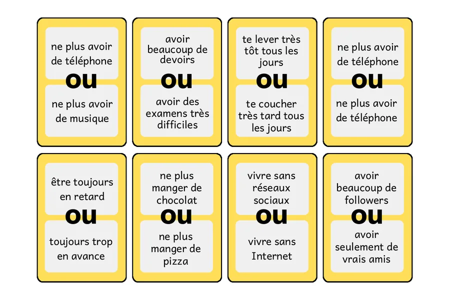
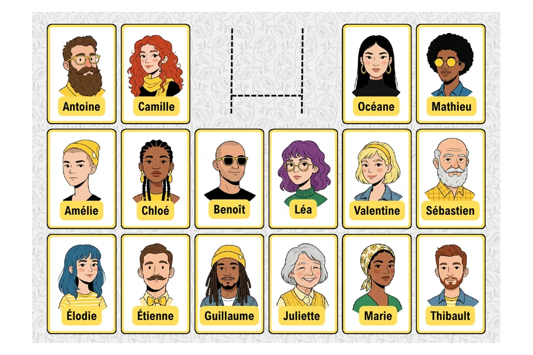
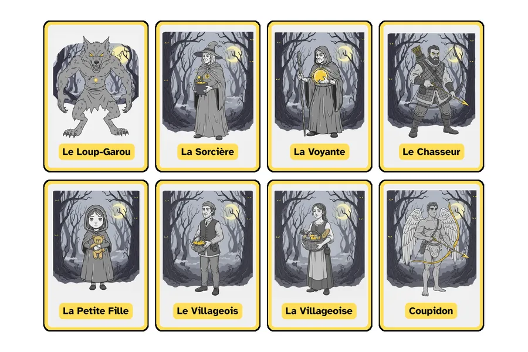
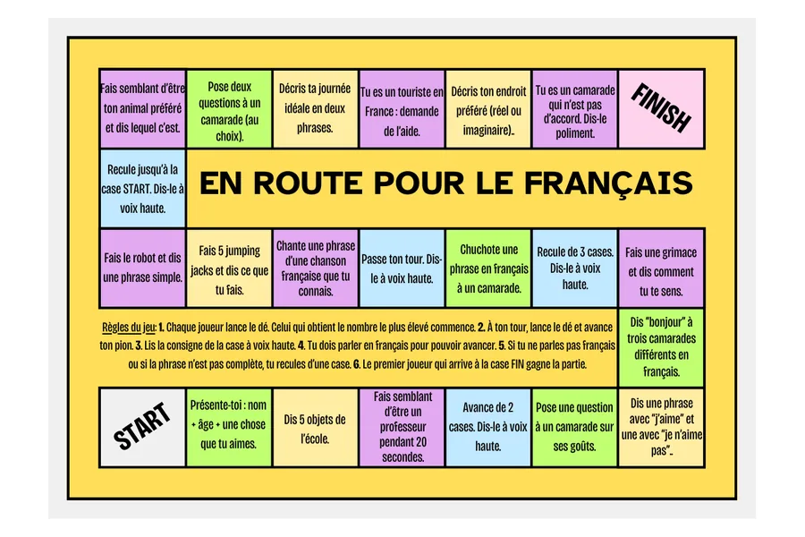
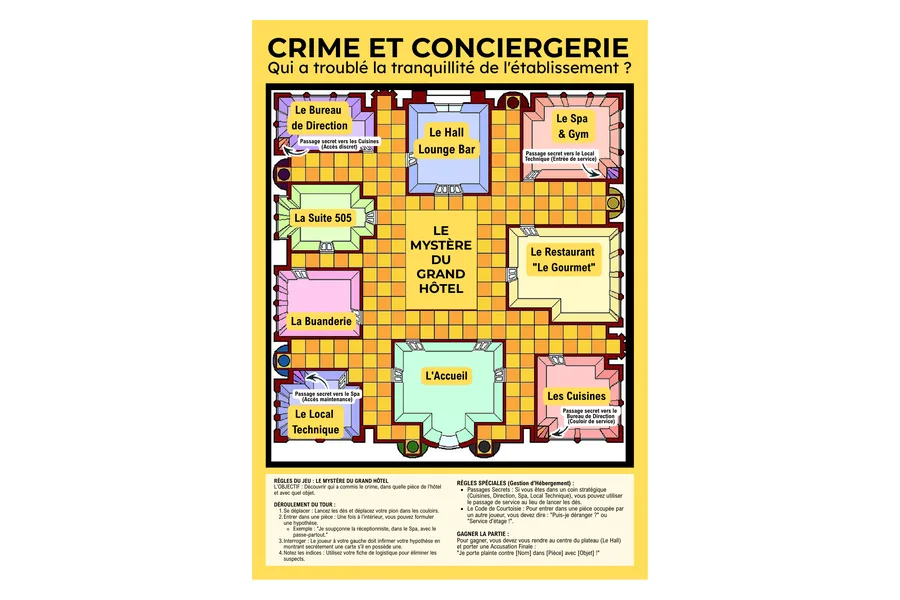
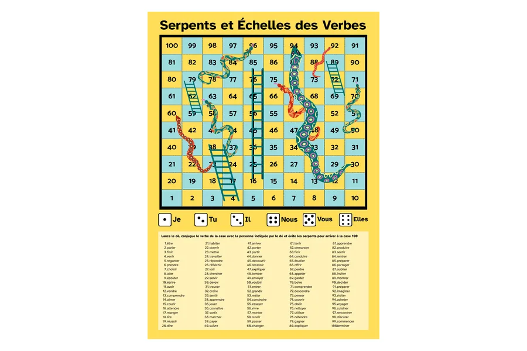

01
PLAYLIST
VER VOCABULARIO
Vocabulario
Lista de reproducción de vocabulario de francés.
FRANÇAIS
Vídeos de gramática y vocabulario, más recursos de aula que puedes descargar y usar.
VER · YOUTUBE
Dos listas para ir directamente a lo que necesitas.
Lista de reproducción de vocabulario de francés.
Lista de reproducción de gramática de francés.
JUGAR · DESCARGABLES
Materiales listos para imprimir, llevar al aula y conseguir que hablen francés sin convertir cada intervención en un interrogatorio policial.

Cartas de dilemas para elegir entre dos opciones, reaccionar y justificar la respuesta en francés.
DESCARGAR PDF
Juego de personajes para trabajar la descripción y formular preguntas hasta descubrir quién es quién.
DESCARGAR PDF
El pueblo duerme llevado al aula de francés: roles, acusaciones y una regla clara —opinar y justificar en francés.
DESCARGAR PDF
Tablero de retos orales: presentarse, hablar de gustos, hacer preguntas, describir, reaccionar y resolver pequeñas situaciones.
DESCARGAR PDF
Le mystère du Grand Hôtel. Un juego de investigación con sospechosos, habitaciones, objetos e hipótesis, pensado alrededor del vocabulario y las situaciones de un hotel.

Serpientes y escaleras para conjugar el verbo de cada casilla con la persona indicada por el dado.
DESCARGAR PDFINBLOGGERNABLE
Los recursos irán apareciendo aquí cuando estén hechos y merezca la pena compartirlos. No hace falta fingir un catálogo infinito.
VOLVER A LA CASA